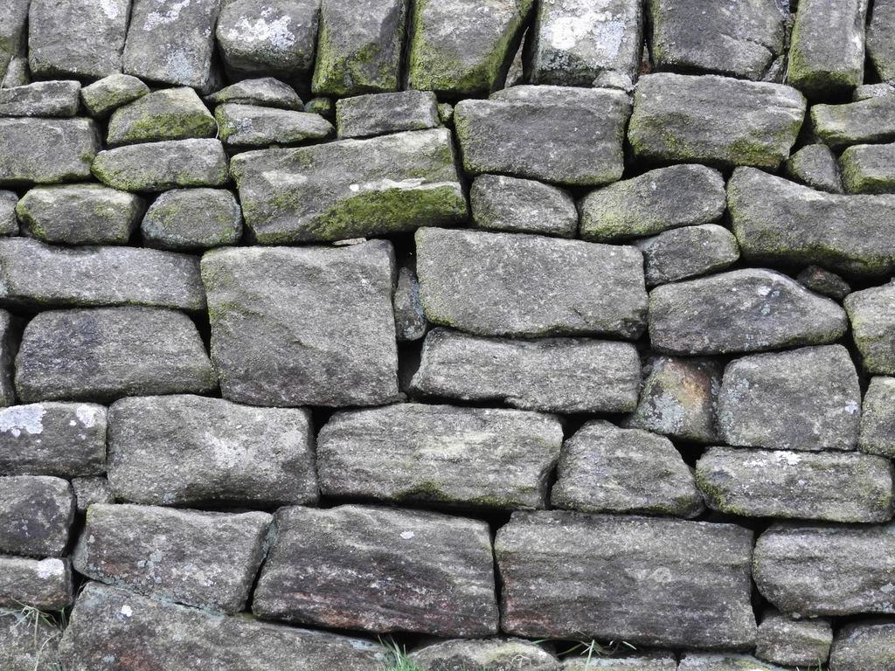
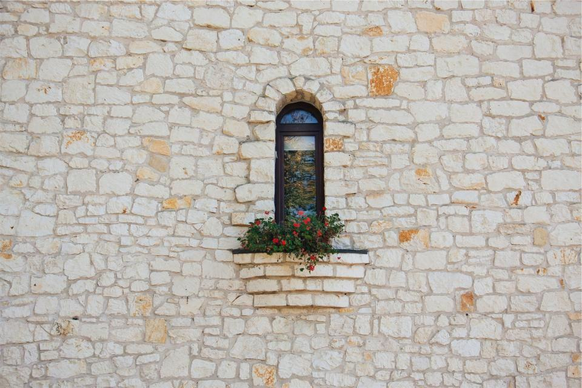
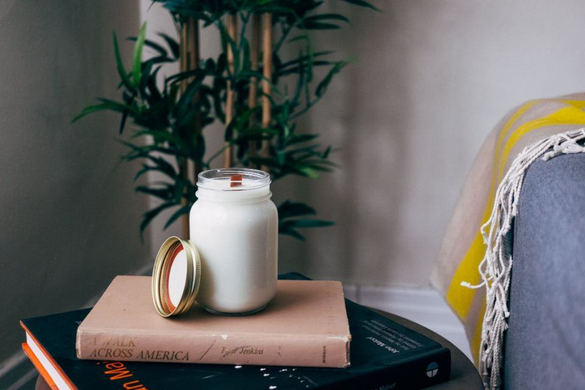

Vad behöver kyrkogården?
Vi kontrollerar, riktar upp och dokumenterar gravstenar åt församlingar och kyrkogårdsförvaltningar – så att ingen sten välter över en besökare.
Våra tjänster- 01
Säkerhetskontroll
Varje sten provas med 35 kilos tryck enligt branschens metod och märks i registret.
- 02
Uppriktning & dymling
Lösa och lutande stenar lyfts, får ny dymling och sätts på stabilt fundament.
- 03
Gravvårdsregister
Foto, GPS-position och status för varje sten, kopplat till församlingens gravbok.
- 04
Kulturgravar
Varsam åtgärd av stenar som är skyddade enligt kulturmiljölagen.
- 05
Återbruk av stenar
Återlämnade gravstenar slipas om och kan få en ny gravrättsinnehavare.
- 06
Kvartersmurar
Omläggning av kallmurar och kantsten runt kvarter och grusgångar.
- 07
Utskick till anhöriga
Vi skriver och skickar brev till gravrättsinnehavare vars sten behöver åtgärd.
- 08
Ramavtal & anbud
Vi svarar på upphandlingar och lämnar fasta priser per sten.
En sten som står säkert behöver inte bytas
Ett underkänt resultat betyder sällan att stenen är förbrukad. Vi säkrar och återanvänder hellre än kasserar, och återlämnade gravstenar slipas om så att de kan få ett nytt liv på samma kyrkogård.

- 0198 %av underkända stenar säkras i stället för att kasseras
- 02410gravstenar återbrukade sedan 2019
- 035 årmellan varje kontroll enligt avtal
Församlingar med ramavtal
 Uppdragsgivare
UppdragsgivareGävle församling
 Uppdragsgivare
UppdragsgivareHudiksvalls pastorat

UppdragsgivareTierps kyrkliga samfällighet
 Logistik
LogistikSöderhamns församling
 Uppdragsgivare
UppdragsgivareBollnäs pastorat
 Uppdragsgivare
UppdragsgivareLjusdals pastorat
 Fastighetsägare
FastighetsägareSandvikens kyrkogårdsförvaltning
 Uppdragsgivare
UppdragsgivareÄlvkarleby församling
Illustrationsbilder
Är det mer än fem år sedan kyrkogården kontrollerades? Hör av er så lämnar vi ett fast pris per sten.
Kontroll, åtgärd, register och kultur
 Säkerhetskontroll
SäkerhetskontrollKontrollteamen
Tvåmannateam med tryckmätare, surfplatta och lyftutrustning som går kvarter för kvarter.

Uppriktning och fundamentÅtgärdslaget
Riktar upp och säkrar underkända stenar, oftast inom fyra veckor efter kontrollen.
 Register och foto
Register och fotoRegistret
Två handläggare som bygger och uppdaterar församlingarnas digitala gravvårdsregister.
 Skyddade gravvårdar
Skyddade gravvårdarKulturgruppen
Tekniker med utbildning i byggnadsvård som tar hand om stenar, kors och staket med kulturvärde.
Förvaltare och anhöriga
Tidigare kontrollerade vi stenarna själva med handkraft. Nu har vi ett register med foto på varje grav och kan visa exakt vad som gjorts.
Brevet till oss var tydligt, med en bild på pappas sten och vad det skulle kosta. Två veckor senare stod den rak igen.
De följde länsstyrelsens villkor till punkt och pricka på de gamla gravarna. Dokumentationen var bättre än vi begärt.
Nytt från bygget

Kontrollsäsongen avslutad
Under 2026 provade vi 41 300 stenar – sista kvarteret i Hudiksvall blev klart i oktober.
Läs mer
Skruvfundament på lerjord
Efter två års test använder vi nu skruvfundament på alla kvarter med lera.
Läs mer
Femårsavtal med Ljusdal
Ljusdals pastorat har tecknat avtal om kontroll och register för sju kyrkogårdar.
Läs mer


Begär ett fast pris
Berätta hur många kyrkogårdar och ungefär hur många gravvårdar det gäller, så skickar Ulf ett förslag på upplägg inom en vecka.
- Telefon
- 070-174 06 47
- E-post
- kontakt@stromsbrokt.se
- Öppettider
- Kontor mån–fre 7–16, telefontid för anhöriga 9–11